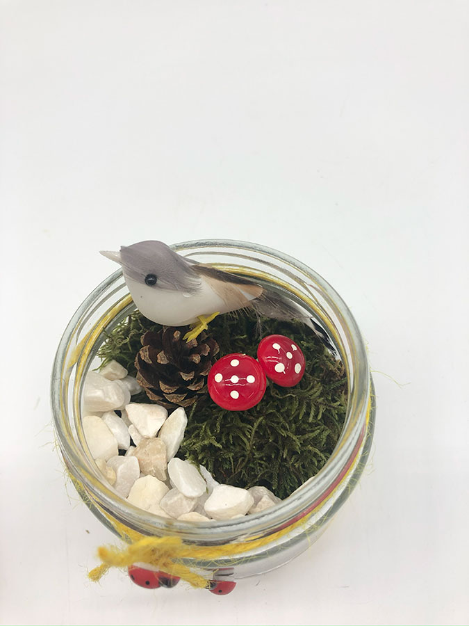
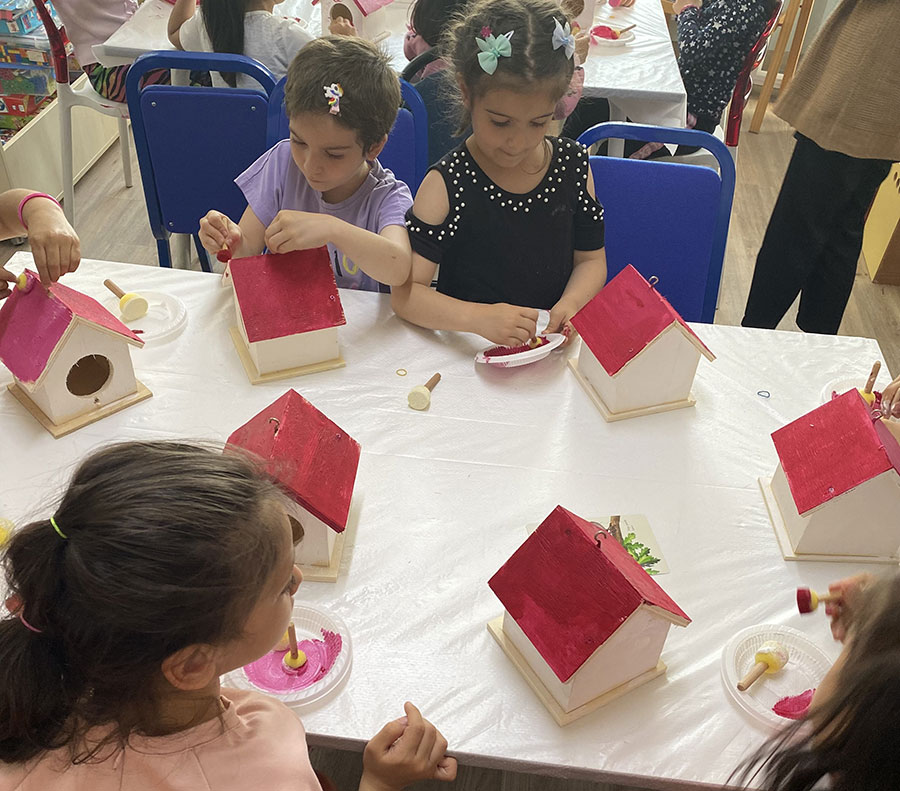
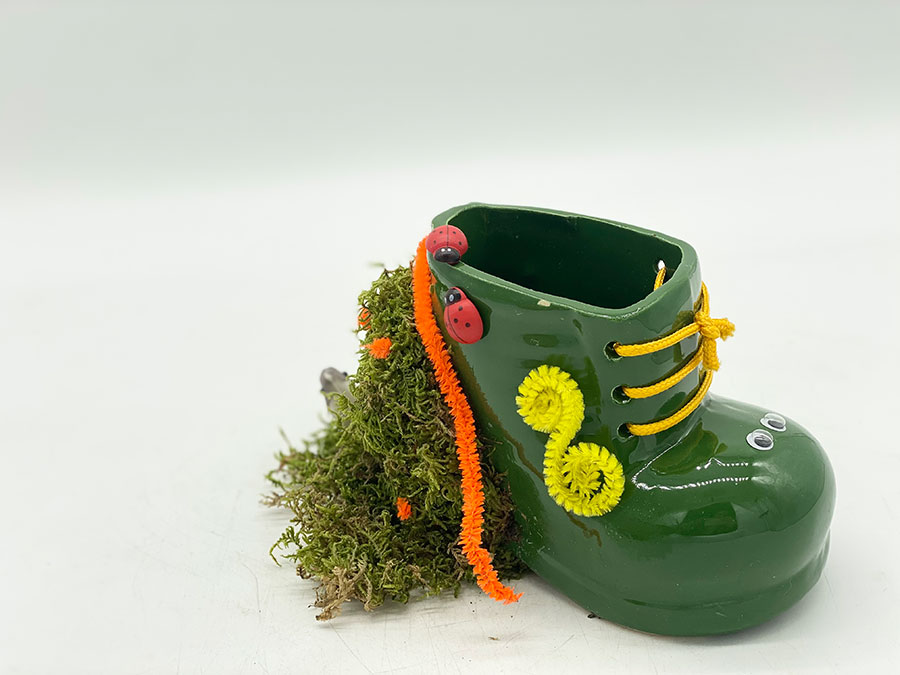

Atölye kataloğuÇocuk Hobi Atölyeleri
Minik eller üretiyor, hayal kuruyor, yeşille buluşuyor!
Teraryumun kelime anlamıyla başlıyor bitkilerin güzel dünyalarına doğru bir yolculuğa çıkıyoruz. Minik eller toprakla buluşuyor ve bir eko sistem yaratıyorlar.
Gerisi tamamen hayal gücü… Bitkinin dibinde minik mantarlar, uğur böcekleri, mini bir kuş, belki bir de taşlı patika bir yol, yolun sonunda yavru bir kedi…
Online ya da yüz yüze gerçekleştirilen atölyede dilerlerse ebeveynler de çocuklara eşlik edebiliyor.

Çocuk+3 yaş
Materyal. Cam kavanoz, toprak, bitkiler ve minik dekoratif figürler
Materyal
Neyle çalışıyoruz
Cam kavanoz, toprak, bitkiler ve minik dekoratif figürler
Atölyeden
Kareler
Mini Kavanoz Teraryum Atölyesi atölyesinden 4 kare.
Benzer kayıtlar
Çocuk Hobi Atölyeleri
Çocuk+5 yaş
Mini Bahçe Atölyesi
Minik katılımcıların toprağa dokunup doğaya yakından bakma fırsatı bulduğu doğa aktivitesi.

Çocuk+5 yaş
Kuş Evi Tasarım Atölyesi
Bitkilerin en yakın dostlarını, kuşları konu ederek doğa sevgisi farkındalığı yaratan atölye.

Çocuk+5 yaş
Kalemlik Tasarım Atölyesi
Çocukların doğadan malzemelerle kendi kalemliklerini tasarladığı atölye.